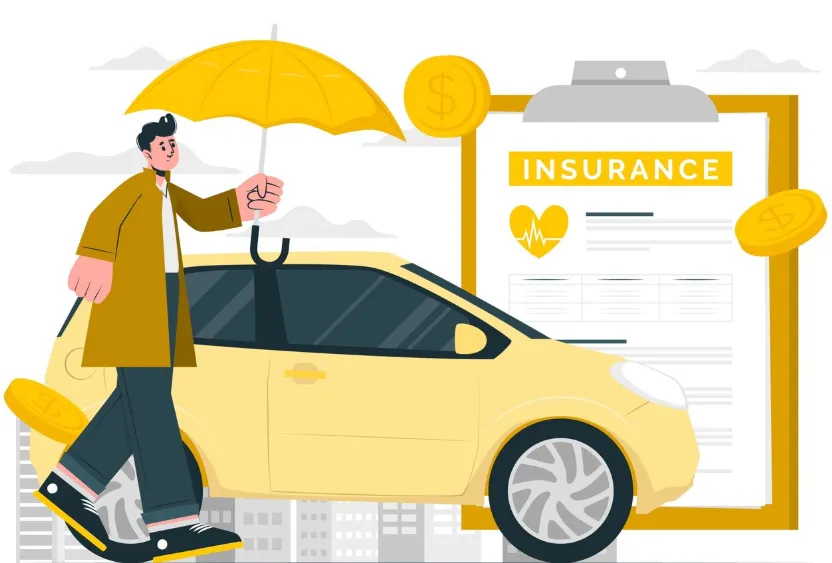
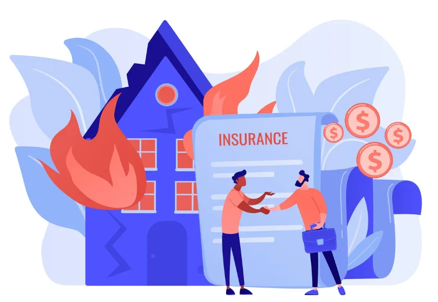
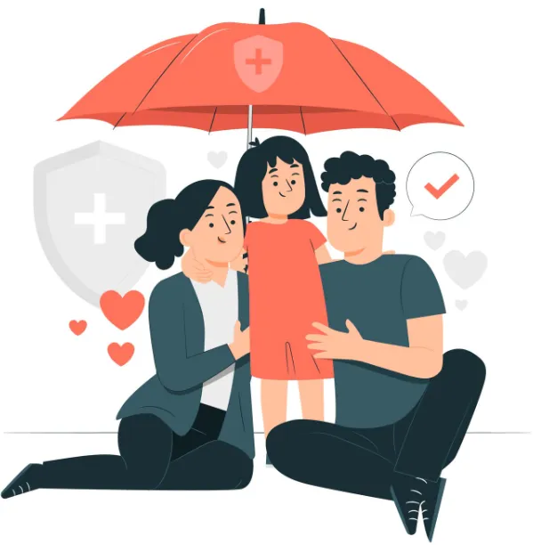

Witamy w Autobal!
Z troską o to, co dla Ciebie najważniejsze.
Oferujemy kompleksowe ubezpieczenia dostosowane do Twoich potrzeb.
Zadzwoń i skorzystaj z naszych usług
O nas
Od ponad dwóch dekad jako Autobal wspieramy klientów w Krakowie, łącząc naszą specjalizację w ubezpieczeniach komunikacyjnych i majątkowych z dedykowaną ofertą dla biznesu.
Nasz doświadczony zespół zapewnia także pełną ochronę życia i zdrowia, wyróżniając się na rynku indywidualnym podejściem.
Naszym celem jest gwarantowanie Państwu bezpieczeństwa poprzez oferowanie precyzyjnie dopasowanych ubezpieczeń.
Wychodząc naprzeciw oczekiwaniom naszych klientów oferujemy szeroką gamę produktów z różnych towarzystw ubezpieczeniowych.
Nasze usługi ubezpieczeń

Komunikacyjne
Oferujemy ubezpieczenia komunikacyjne, które zapewniają ochronę Twojego pojazdu oraz bezpieczeństwo na drodze. Nasze polisy obejmują OC, AC, NNW oraz Assistance, dostosowane do Twoich potrzeb.

Majątkowe
Zapewnij sobie bezcenny spokój ducha, wiedząc, że dorobek Twojego życia jest bezpieczny niezależnie od kaprysów losu. Nasza polisa to gwarancja, że cokolwiek się wydarzy, Twój dom i wszystko, co w nim cenne, pozostanie pod najlepszą ochroną.

Biznes
Dedykowane rozwiązania chroniące mienie firmy, pracowników oraz zapewniające odpowiedzialność cywilną z tytułu prowadzonej działalności. Oferujemy indywidualne programy ochrony, które pozwalają bezpiecznie rozwijać Twój biznes bez obaw o nieprzewidziane straty.

Na życie
Zadbaj o finansowe bezpieczeństwo swojej rodziny na wypadek choroby, wypadku lub innych trudnych zdarzeń życiowych. Pomożemy Ci dobrać polisę, która stanie się realnym wsparciem dla Twoich bliskich w przyszłości. Oferujemy również pakiety medyczne.
Turystyczne
Podróżuj bez obaw dzięki naszym ubezpieczeniom turystycznym. Oferujemy ochronę zdrowia, bagażu oraz wsparcie w przypadku nieprzewidzianych sytuacji podczas podróży oraz utratę kosztów związanych z odwołaniem wyjazdu.
FAQ
Jakie ubezpieczenie wybrać – OC czy AC i czym różnią się te polisy?
Czym jest ubezpieczenie OC?
Ubezpieczenie OC (odpowiedzialność cywilna) to podstawowa, obowiązkowa polisa dla każdego właściciela pojazdu. Chroni kierowcę przed kosztami szkód wyrządzonych innym uczestnikom ruchu — zarówno w pojazdach, jak i na mieniu czy zdrowiu osób trzecich. Zakres OC jest taki sam u każdego ubezpieczyciela, dlatego warto skupić się głównie na cenie i obsłudze.
Czym jest ubezpieczenie AC (autocasco)?
Autocasco to dobrowolne ubezpieczenie samochodu, które chroni pojazd właściciela. Dzięki AC możesz liczyć na odszkodowanie w razie: kolizji lub wypadku z Twojej winy, szkód parkingowych, uszkodzenia przez żywioły, kradzieży, aktu wandalizmu.
Co wybrać — OC czy pełen pakiet OC + AC?
Jeśli zależy Ci na kompleksowej ochronie samochodu, szczególnie nowego lub droższego, warto wybrać pakiet OC + AC. Taka opcja zmniejsza ryzyko finansowe i gwarantuje pełniejszą finansową ochronę pojazdu.
Ile kosztuje ubezpieczenie na życie i od czego zależy cena polisy?
Co wpływa na koszt ubezpieczenia na życie?
Cena polisy na życie zależy od: wieku ubezpieczonego, ogólnego stanu zdrowia, sumy ubezpieczenia (wysokości świadczenia), rodzaju ochrony, czasu trwania umowy, ryzyka zawodowego lub stylu życia. Młodsze osoby płacą zazwyczaj znacznie niższe składki, dlatego warto wykupić polisę wcześniej.
Czy można dopasować ubezpieczenie na życie do własnych potrzeb?
Tak. Towarzystwa oferują wiele rozszerzeń, np.: ubezpieczenie od poważnych zachorowań, pobytu w szpitalu, wypadków, ochronę rodziny, zabezpieczenie kredytu hipotecznego. Dobrze dobrana polisa zapewnia komfort finansowy w trudnych sytuacjach życiowych.
Jakie dokumenty są potrzebne, aby wykupić polisę ubezpieczeniową?
Podstawowe dokumenty wymagane przy zakupie polisy
Do zawarcia umowy ubezpieczeniowej najczęściej potrzebne są: dowód osobisty, numer PESEL, aktualne dane kontaktowe.
Jakie dokumenty są potrzebne przy ubezpieczeniu samochodu?
Do zakupu ubezpieczenia OC lub AC wymagane są: dowód rejestracyjny lub jego dane, numer VIN, dane właściciela pojazdu, czasem także informacja o przebiegu lub dotychczasowych szkodach.
Dokumenty do ubezpieczenia na życie lub zdrowotnego
Najczęściej wystarczy ankieta medyczna, choć czasem ubezpieczyciel może poprosić o badania lekarskie przy wysokich sumach ubezpieczenia.
Jakie ubezpieczenie nieruchomości najlepiej chroni dom lub mieszkanie?
Co powinno obejmować dobre ubezpieczenie nieruchomości?
Kompleksowa polisa domu lub mieszkania powinna chronić: stałe elementy (instalacje, zabudowy), wyposażenie ruchome (meble, sprzęt RTV/AGD), pokrywać szkody powstałe w wyniku pożaru, zalania, huraganu, gradobicia.
Jakie rozszerzenia polisy warto rozważyć?
Najczęściej wybierane dodatki to: ubezpieczenie od kradzieży z włamaniem, przepięcia elektryczne, stłuczenia szyb, assistance domowy, OC w życiu prywatnym (szkody wyrządzone sąsiadom).
Czy przedsiębiorca musi posiadać ubezpieczenie odpowiedzialności cywilnej (OC)?
Czy OC dla firm jest obowiązkowe?
Nie wszystkie branże muszą posiadać OC, ale niektóre — np. medyczna, budowlana, księgowa, transportowa — mają taki obowiązek ustawowy.
Dlaczego warto kupić OC działalności gospodarczej?
Ubezpieczenie OC firmy chroni przed kosztami szkód wyrządzonych klientom w trakcie wykonywania usług. Jest to szczególnie ważne w zawodach wymagających wysokiej odpowiedzialności lub pracy z klientem.
Jak dobrać najlepszą polisę OC dla firmy?
Dobór polisy zależy od profilu działalności, liczby pracowników, obrotów oraz rodzaju wykonywanych usług. Doradca ubezpieczeniowy pomoże przeanalizować ryzyka i dobrać adekwatną ochronę.
Jak zgłosić szkodę?
Jak wygląda proces zgłaszania szkody ubezpieczeniowej?
Zgłoszenie szkody w ubezpieczeniu można przeprowadzić na kilka sposobów — telefonicznie, online, poprzez aplikację mobilną lub w oddziale agenta. Najszybszą metodą jest zgłoszenie szkody przez formularz internetowy towarzystwa. Wymagane są podstawowe dane: numer polisy, opis zdarzenia, data i miejsce, dane poszkodowanego oraz dokumentacja zdjęciowa.
Jak przygotować się do zgłoszenia szkody?
Przed rozpoczęciem zgłoszenia warto przygotować: numer polisy, dane pojazdu lub nieruchomości, zdjęcia uszkodzeń oraz ewentualne notatki policyjne. Im dokładniejsze informacje podane przy zgłoszeniu szkody, tym szybciej przebiega proces likwidacji.
Ile trwa likwidacja szkody?
Towarzystwa ubezpieczeniowe mają obowiązek rozpatrzyć zgłoszenie szkody w ciągu 30 dni. W praktyce dla prostych szkód komunikacyjnych trwa to często kilka dni. W przypadku bardziej skomplikowanych zdarzeń może być wymagane dodatkowe postępowanie i dokumenty.
Co obejmuje OC w życiu prywatnym?
Zakres odpowiedzialności cywilnej w życiu prywatnym
Ubezpieczenie OC w życiu prywatnym chroni przed finansowymi konsekwencjami szkód wyrządzonych osobom trzecim w codziennych sytuacjach. Polisa obejmuje m.in. szkody spowodowane przez dzieci, zwierzęta domowe, rowerzystów, a nawet uszkodzenia powstałe podczas rekreacji czy uprawiania sportu amatorskiego.
Jakie szkody najczęściej pokrywa OC w życiu prywatnym?
Typowe przykłady obejmują: zbicie telefonu lub uszkodzenie mienia innej osoby, szkody wyrządzone na rowerze lub hulajnodze, szkody spowodowane przez psa lub kota, zalanie sąsiada w mieszkaniu, uszkodzenia podczas uprawiania sportu.
Kogo chroni OC w życiu prywatnym?
Polisa zazwyczaj obejmuje domowników mieszkających pod tym samym adresem: małżonka, partnera, dzieci oraz współlokatorów. To ważny element ochrony w przypadku szkód przypadkowych, za które ponoszona jest odpowiedzialność cywilna.
Aktualne kary za brak OC
Kary za brak obowiązkowego OC komunikacyjnego
Brak ważnego ubezpieczenia OC pojazdu mechanicznego wiąże się z wysokimi karami finansowymi nakładanymi przez UFG. Wysokość kary zależy od rodzaju pojazdu oraz długości przerwy w ubezpieczeniu.
Przykładowe wysokości kar (2025 r.)
Samochód osobowy:
1870 zł – za przerwę do 3 dni
4670 zł – za przerwę od 4 do 14 dni
9330 zł – za przerwę powyżej 14 dni
Motocykl / skuter:
310 zł – za przerwę do 3 dni
780 zł – za przerwę od 4 do 14 dni
1560 zł – za przerwę powyżej 14 dni
Samochód ciężarowy:
2800 zł – za przerwę do 3 dni
7000 zł – za przerwę od 4 do 14 dni
14 000 zł – za przerwę powyżej 14 dni
Dlaczego UFG karze za brak polisy OC?
OC chroni osoby poszkodowane w wypadkach drogowych. UFG musi mieć pewność, że każdy pojazd poruszający się po drogach pokryje wyrządzone szkody. Kara za brak OC jest sposobem na egzekwowanie tego obowiązku.
Jak prawidłowo wykonać zdjęcia do AC?
Jak przygotować pojazd do zdjęć?
Aby zgłoszenie AC zostało zaakceptowane, zdjęcia muszą być wyraźne i wykonane zgodnie z wytycznymi ubezpieczyciela. Należy umyć pojazd, ustawić go w dobrze oświetlonym miejscu oraz usunąć elementy zasłaniające widok (śnieg, pokrowce, reklamówki, bagaże).
Jakie ujęcia są wymagane?
Zazwyczaj wymagane są zdjęcia:
- Zdjęcia zrobione po przekątnych od strony kierowcy z przodu oraz prawej strony z tyłu
samochodu aby widoczne były boki fotografowanego pojazdu.
- numeru VIN nabitego na karoserii (nie na naklejce lub podszybiu)
- licznika przebiegu
- wyposażenia (deska rozdzielcza)
- kluczyków
- ewentualnych uszkodzeń
Jak uniknąć błędów na zdjęciach do AC?
Najczęstsze błędy to: zdjęcia w ciemności, niska jakość, zamazane numery rejestracyjne, brak zdjęć VIN lub niewidoczny przebieg. Warto wykonać kilka zdjęć każdego ujęcia i wybrać najlepsze.
Do jakich krajów jest potrzebna Zielona Karta?
Kraje wymagające Zielonej Karty (ZK)
Zielona Karta jest dokumentem potwierdzającym ważność OC za granicą poza Unią
Europejską. Do
krajów, które wymagają Zielonej Karty, należą obecnie m.in.:
Albania, Bośnia i Hercegowina, Iran, Izrael, Maroko, Macedonia Północna, Mołdawia,
Tunezja,
Turcja, Ukraina (zależnie od aktualnych przepisów), Białoruś.
W jakich krajach nie trzeba Zielonej Karty?
W większości państw UE, strefy Schengen oraz EOG wystarczy standardowe ubezpieczenie OC.
Jak wyrobić Zieloną Kartę?
Dokument wydaje ubezpieczyciel pojazdu, najczęściej bezpłatnie lub za niewielką opłatą. Warto złożyć wniosek z kilkudniowym wyprzedzeniem przed wyjazdem.